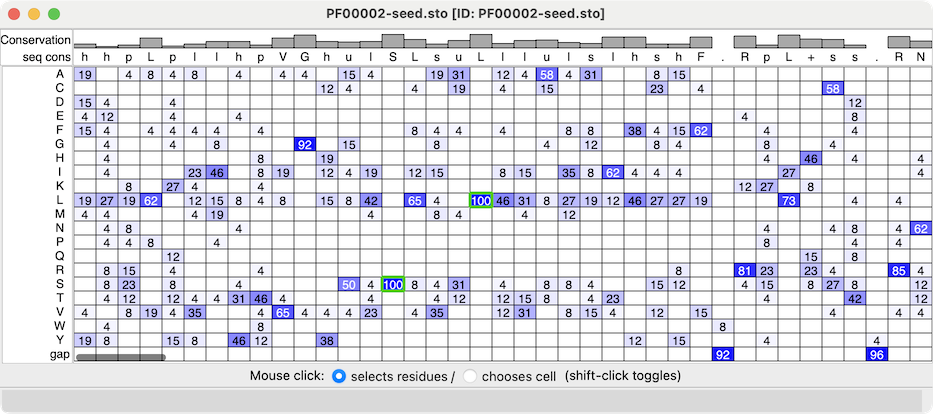

|  |
| Profile grid of the PFAM 7 transmembrane receptor (Secretin family) seed alignment associated with a structure of the glucagon-like peptide-1 receptor, PDB 7LCJ. Two residues with 100% type conservation are selected and labeled. |
Profile Grid shows a condensed view of a multiple sequence alignment in which the rows are the possible sequence characters (residue one-letter codes and gap), the columns are positions in the alignment (as in the standard view of a sequence alignment), and the values in the cells are percentages of that type of residue at that position, rounded to the nearest integer. A blank cell means that no sequences at all have that residue type at that position, whereas a displayed value of 0 means that some do, but <0.5%.
Much like the Sequence Viewer, the Profile Grid tool interacts with any associated structures, and it can include headers above the sequence data.
Opening a sequence alignment file with the open command option viewer grid shows it as a Profile Grid.
Multiple Profile Grid windows can be shown at the same time, and they can be manipulated like other panels in ChimeraX (more...).
A Mouse click can interact with the grid cells in either of two ways, as specified near the bottom of the window:
Either way, cell status can be toggled or the cell added to the existing set of highlighted/chosen cells with Shift-click.
The Profile Grid context menu includes: